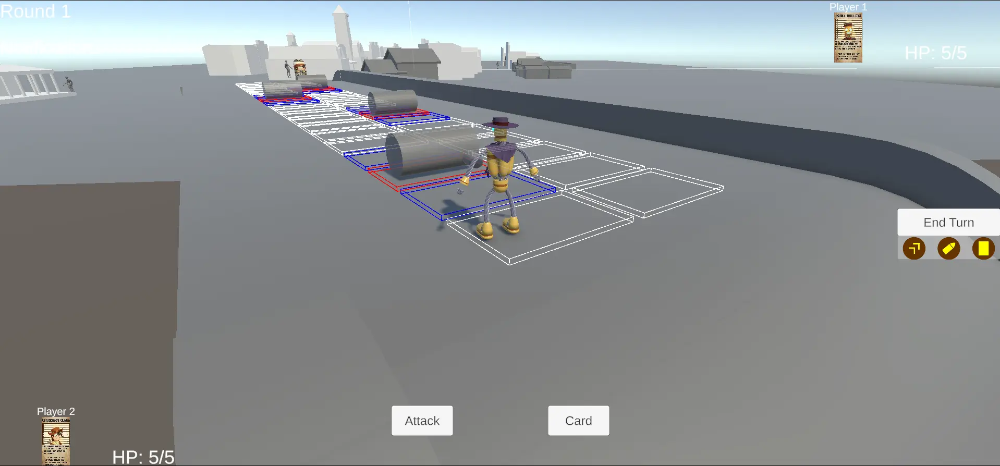

Refactoring, UI, and Character Prefabs - Rooty Tooty's Next Steps
Since the last blog, Rooty Tooty has gone through a major refactor and a wave of new features. This
post is all about splitting up the TurnManager, introducing new scripts, and building a
more robust gameplay UI. I've also been learning a lot about Unity best practices, especially around
code architecture and variable visibility.
Splitting Up the TurnManager
The original TurnManager was doing far too much - handling player turns, actions, UI,
and even some player management. As the project grew, it became clear that this
approach was making things harder to debug and extend. To make the codebase more maintainable and
modular, I split it into three new scripts:
- ActionManager - Handles the queue and execution of player actions (move, attack, card, etc.), as well as tracking how many actions a player has left each turn.
- GameplayUIManager - Responsible for updating the UI: showing player info, round number, action history (notifications), and managing the state of action buttons (attack, card, move, end turn).
- PlayerManager - Keeps track of all player objects, their states, and handles spawning and switching between them.
This separation has made it much easier to reason about each part of the game, and scripts now
communicate with each other through clear method calls and events. For example, when a player
finishes their move, ActionManager notifies GameplayUIManager to update
the UI, and PlayerManager to check if the turn should end.
ActionManager Example
The ActionManager is now the central hub for all player actions. It keeps track of how
many actions a player has left, and ensures that once all actions are used, the turn ends
automatically. Here's a simplified snippet:
// ActionManager.cs
private int MaxActionsPerTurn = 3;
private int actionsRemaining;
private bool[] actionsSpent = new bool[3];
public int ActionsRemaining => actionsRemaining;
public bool[] ActionsSpent => actionsSpent;
public event Action<int> OnActionsChanged;
public void StartTurn()
{
actionsRemaining = MaxActionsPerTurn;
for (int i = 0; i < actionsSpent.Length; i++)
actionsSpent[i] = false;
OnActionsChanged?.Invoke(actionsRemaining);
}
public void SpendAction(ActionType type)
{
int idx = (int)type;
if (actionsRemaining > 0 && !actionsSpent[idx])
{
actionsSpent[idx] = true;
actionsRemaining--;
OnActionsChanged?.Invoke(actionsRemaining);
}
}
This approach has made it much easier to add new action types in the future, and keeps the logic for action limits in one place.
GameplayUIManager Example
The GameplayUIManager is responsible for keeping the player informed. It updates the UI
whenever the game state changes, such as when a player uses an action or when the round advances. It
also manages the game log, which shows up to five of the most recent actions:
// Adds an entry to the game log (shows up to 5 most recent entries)
public void AddLogEntry(string entry)
{
gameLog.Add(entry);
if (gameLog.Count > 5)
gameLog.RemoveAt(0);
if (logText)
logText.text = string.Join("\n", gameLog);
}
By keeping UI logic out of the gameplay scripts and using a dedicated log, it's much easier to tweak the look and feel of the game without risking gameplay bugs. This approach also makes it simple to keep players up to date with the latest actions and events in the match.
PlayerManager Example
PlayerManager now handles all player objects, including spawning, switching, and
tracking their state. This has made it much easier to support multiple players and to add new
character prefabs:
private List<PlayerCharacter> players = new();
public IReadOnlyList<PlayerCharacter> Players => players;
public void SpawnPlayers(Vector2Int[] spawnCells, Transform gridTransform)
{
// ...spawning logic
}
This modular approach means that adding new player types or changing how turns work is much less risky.
PlayerPanel and GameLoader updates
Another improvement is the introduction of a dedicated EventListener scene. By ensuring only one event listener is present in the game at any time, I've avoided the duplicate event handler errors that sometimes cropped up in earlier builds. This has made event management much more reliable and debugging a lot easier.
PlayerPanel Example
public void SetPlayerInfo(Sprite characterSprite, string playerName, int currentHealth, int maxHealth)
{
if (characterImage) characterImage.sprite = characterSprite;
if (playerNameText) playerNameText.text = playerName;
if (healthText) healthText.text = $"HP: {currentHealth}/{maxHealth}";
}
These scripts have helped keep responsibilities clear and the codebase tidy, especially as the game's complexity grows. It's also made it much easier to debug UI issues, since each panel is responsible for its own updates.
Gameplay UI Overhaul
One of the biggest changes is the new gameplay UI. Players can now see their character info, the current round, a history of actions (notifications), and have dedicated buttons for attacking, playing a card, and moving. The move action now works by clicking a space and confirming the movement. Once all actions are used (3/3), the turn ends automatically, but players can also end their turn early with the end turn button.
This UI overhaul has made the game much more user-friendly and has helped me learn a lot about Unity's UI system, event-driven programming, and keeping UI logic separate from game logic. I've also started using events and delegates to keep the UI responsive to changes in the game state, which has been a great learning experience.
// Example: Notifying UI of action changes
public event Action<int> OnActionsChanged;
public void SpendAction(ActionType type)
{
int idx = (int)type;
if (actionsRemaining > 0 && !actionsSpent[idx])
{
actionsSpent[idx] = true;
actionsRemaining--;
OnActionsChanged?.Invoke(actionsRemaining);
}
}
Character Prefabs and Visuals
Another big step forward: each character now has their own prefab. When spawning in the world, they appear as a placeholder capsule with their card art texture, making it easy to distinguish between characters. Andy has modelled Bobby Bullets, and I've added a skeletal mesh to that prefab, removing the capsule mesh renderer but keeping the component for collision - as is standard in Unity character setup.

This approach means we can quickly swap out placeholder art for final models as they're completed, and ensures that each character is visually distinct from the start.
Script Changes and Best Practices
Refactoring meant updating a lot of existing scripts to work with the new managers. I've started
using [SerializeField] private instead of public variables, and where variables need to
be accessed by other scripts, I've made them private with public read-only properties. This has
improved encapsulation and made the codebase safer and easier to maintain.
private int actionsRemaining;
public int ActionsRemaining => actionsRemaining;
I've also been learning about the importance of clear responsibilities and communication between scripts. By using events and method calls, rather than direct variable access, the code is more robust and less prone to bugs when things change.
Learning and Next Steps
This iteration has been a real learning process - not just in Unity, but in software architecture. Splitting up responsibilities, using proper variable visibility, and building a modular UI has made the project feel much more professional. There's still plenty to do, but the foundation is much stronger now.
Next up: I'll be refining the turn phase system and introducing dedicated cards for each player, so actions will be based on the value and suit of the card drawn rather than just the basic attack, card, and move buttons. This will add a lot more variety and strategy, with different effects for low, high, face, and ace cards. I'm also planning to setup proper animations for Bobby Bullets created by Andy, and we're hoping to experiment with cloth physics for his neckerchief. As always, there's plenty to polish, but I'm excited to see how these new features will bring the game to life!